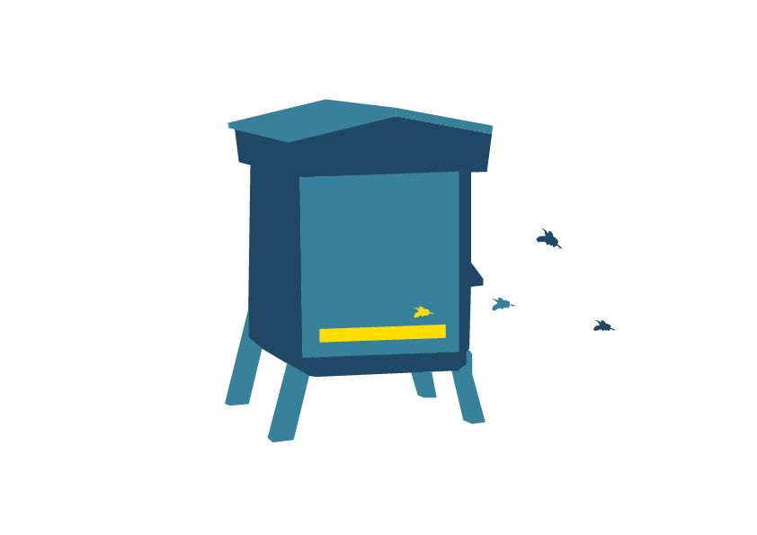
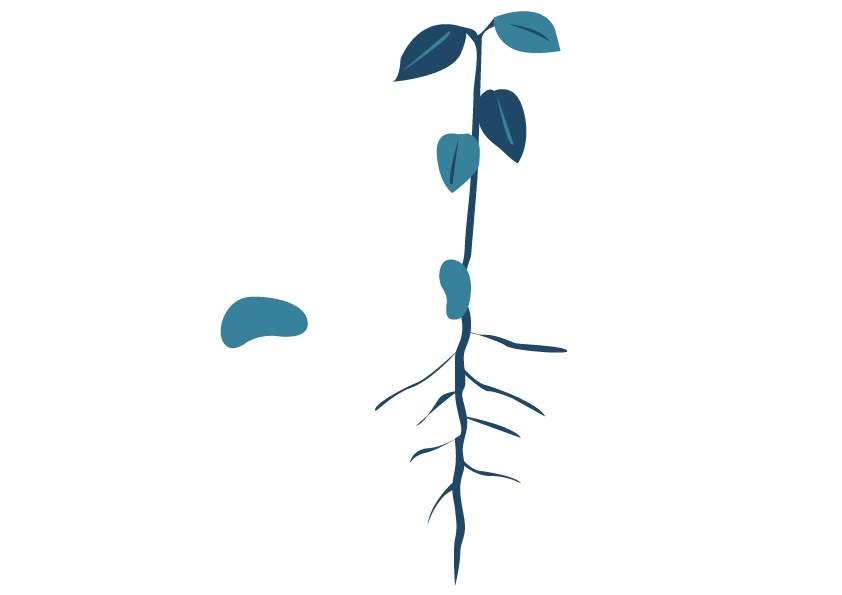
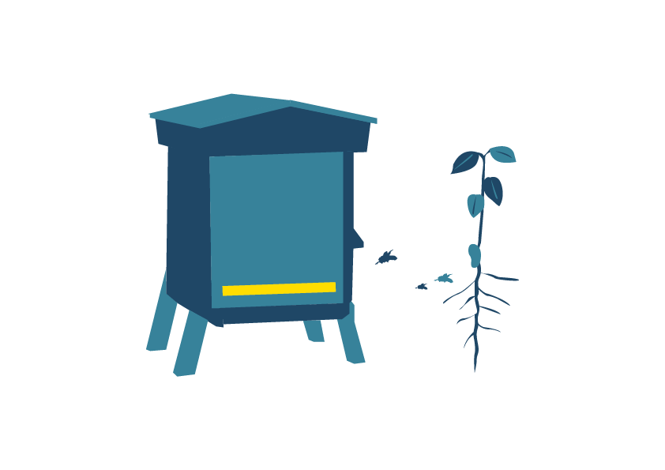

Ici tout en t'amusant tu vas découvrir les différentes étapes de la pollinisation des fleurs par les abeilles !
2
Le pollinisateur transporte le pollen d'une fleur à une autre, les abeilles butinent.

Ici tout en t'amusant tu vas découvrir les différentes étapes de la pollinisation des fleurs par les abeilles !
Les abeilles quittent leurs ruches.
Le pollinisateur transporte le pollen d'une fleur à une autre, les abeilles butinent.
L'ovaire de la fleur fécondée se transforme en un fruit contenant des graines.
Une nouvelle plante peut se développer à partir de chaque graine
Les abeilles retournent dans leurs ruches.
À présent regardons une vidéo !
Une autre vidéo ?
Amuse toi encore !
La pollinisation avec Sid !
Merci à toi pour la visite.
À TRÈS BIENTÔT !